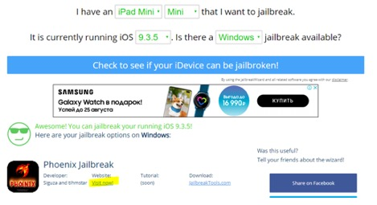
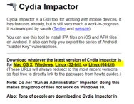
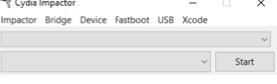

Types of jailbreaking
- Tethered jailbreaks don’t persist through reboots, so re-applying jailbreaks requires the device to be connected (tethered) to a computer during every reboot. The device may not reboot at all if the computer is not connected.
- Semi-tethered jailbreaks can’t be re-applied unless the device is connected to a computer during reboot. The device can also boot into non-jailbroken mode on its own.
- Semi-untethered jailbreaks allow the device to boot on its own, but the kernel patches (or user-land modifications) for disabling code signing aren’t applied automatically. The user must re-jailbreak the device by starting an app or visiting a website (not requiring a connection to a computer, hence the term untethered).
- Untethered jailbreaks are the most popular choice for end users because they need to be applied only once, after which the device will be permanently jailbroken.
What’s jailbreaking?
Why jailbreaking?
How to jailbreak
Option 1. Easy, no PC needed.
OutdatedAirplane mode on, plugged into a power supply. Go to https://silzee.com/, choose a jailbreak version (should correspond to the device’s iOS version), tap “Get”. After the application is installed, go to General 🡪 Profiles and Device Management 🡪 Choose your jailbreak app, tap 🡪 Trust. Then open the jailbreaking app. If the app supports some jailbreaking settings, set them, then press “Jailbreak”. See additional info here: https://jailbreaktutorials.github.io/jailbreak-ios-10-ios-10-2-iphone-tutorial-yalu/
Option 2. More complicated. PC needed.
If the website didn’t have a jailbreaking tool for you version of iOS, go to https://www.jailbreak-me.info/check-jailbreak/ and check whether jailbreaking for your iOS exists. If so, go to the jailbreaking app’s website and follow the instructions.
In case of Phoenix for 9.3.5, the steps were as follows:
- Go to Phoenix website https://phoenixpwn.com/
- Download Cydia Impactor from http://www.cydiaimpactor.com/

- Open Cydia, drag jailbreak *.ipa (in this example – Phoenix) to Cydia window

- When prompted, enter your AppleID email (login). Don’t enter the password! The password Cydia Impactor is asking for is not the password for your AppleID! See below (
Error provision.cpp:150); - This will install the jailbreaking application on the device. After the installation is complete, open the application on the iDevice and tap “jailbreak”;
Possible problems encountered:
🛑 Problem: When trying to install an app using Cydia, an error might pop up: provision.cpp:150.
👌 Fix: See here or read below: http://www.iphonehacks.com/2016/08/fix-provision-cpp150-error-jailbreaking-ios-9-3-3.html Log into https://appleid.apple.com Scroll down to the Security section and click on the Edit button. In this section, find the “APP-SPECIFIC PASSWORDS” part and then click on Generate Password. Enter a name for the password, which could be anything like “PanguJailbreak” and then click on the Create button. Copy the password that is generated. Now, when Cydia Impactor asks you to enter your Apple ID password, use the password generated in the last step.
Option 3. Windows machine required.
Jailbreak detection bypass. Use xCon tool (find in Cydia). Stored in repo http://xcon.crazy.net/. Note: Xcon didn’t work for me.
Add it to Cydia repo list. https://kubadownload.com/news/jailbreak-bypass.
On iPhone 5S (iOS 10) add this repo https://ryleyangus.com/repo/ to Cydia and install package Liberty (not lite, normal Liberty).
ssh root@[device IP]
# enter default password 'alpine'
passwd # change default password
Option 4. This one will only work up to iOS 13 at the moment of this writing (the latest OS at the moment is 14.4.2). The option requires 3UTools which is available from here, iDevice connected via USB and a Windows machine (the only host OS supported by this tool).
Exploits
You may read about different exploits, used to perform jailbreak here.
References
[1] Technical analysis of the checkm8 exploit
[2] About alloc8 exploit
[3, 4, 5] checkm8 exploit code in python
[6] Write-up on checkm8 (rus and eng) by Digital Security
[7] Digital Security write-up about patch diffing and some exploits